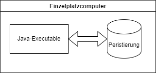

Jedes Semester müssen Sie Projekte verwalten, die von 2-3 Studenten bearbeitet werden sollen. Um die Themen der Projekte kümmern sich die Studenten selbst, d.h. sie schlagen Ihnen das Thema vor und Sie müssen entscheiden, ob das Thema den Ansprüchen genügt und zugelassen wird, ob noch Ergänzungen zu berücksichtigen sind oder das Thema abgelehnt werden muss.
Hierzu wird eine Software entwickelt, um Ihnen die Verwaltung der Projekte leichter zu gestalten.
Bisher wurde diese Projektverwaltung durch Stift und Papier von den Mitarbeitern der FH selbst umgesetzt. Es gab keine zentrale Verwaltung.
Nun soll ein Softwareprodukt entwickelt werden, welches Ihnen -- den Projektverwalter -- bei der Verwaltung der studentischen Projekten hilft.


| Nr 1 | Name: Studenten reichen einen Projektantrag ein |
|---|---|
| Kontext | Studenten können Projektanträge mit Kurzbeschreibung, detaillierter Beschreibung usw einreichen |
| Auslöser | Student möchte Projektantrag einreichen |
| Ebene | 1 |
| Hauptakteur | Anwender: Student (Endbenutzer) |
| Beteiligte und deren Ziel/Interessen | Beteiligter |
| Student | Möchte einen Projektantrag für das jeweilige Modul in seinem Studium einreichen |
| Vorbedingungen | Muss eingeschrieben sein |
| Mindestgarantie | Speicherung des Projektantrages in der Datenbank |
| Erfolgsgarantie | Projektantrag wird an den Mitarbeiter zur Bewertung geleitet |
| Erfolgsszenario | Schritt |
| 1 | Prüfung ob alle für den Antrag benötigte Daten eingetragen wurden |
| 2 | Daten werden gespeichert und an den Mitarbeiter zur Bewertung geleigtet |
| Misserfolgsszenario | Schritt |
| 1 | Projektantrag hat zusätzliche Informationen, die nicht in den vorgegebenen Feldern eingegeben werden können |
| Erweiterungen, Alternativen | Schritt |
| 1a | Ein Feld für Speicherung von Anhängen |
| Nr 2 | Name: Überarbeiten von Projektanträgen |
|---|---|
| Kontext | Studenten müssen Projektanträge bearbeiten, wenn diese von Mitarbeitern der FH bemängelt wurden |
| Auslöser | Mitarbeiter der Fachhochschule möchte eine Ausbesserung des Projektantrages |
| Ebene | 2 |
| Hauptakteur | Student |
| Beteiligte und deren Ziel/Interessen | Beteiligter |
| Student | Möchte den Projektantrag überarbeiten |
| Mitarbeiter | Kann die jeweiligen Projektanträge in Revision geben |
| Vorbedingungen | Ein Projektantrag muss bereits eingereicht worden sein, und vom Mitarbeiter als Verbesserungswürdig eingestuft worden sein. |
| Mindestgarantie | Speichern des aktuellen Projektantrages sowie neuer Einreichung des Antrages beim Mitarbeiter |
| Erfolgsgarantie | Der aktualisierte Projektantrag wird neu eingereicht |
| Erfolgsszenario | Schritt |
| 1 | Prüfung ob der aktualisierte Antrag korrekt eingegeben wurde |
| 2 | Aktualisierung des Antrages für den Mitarbeiter, der diese in einer Warteschlange nun erneut abarbeiten kann |
| Misserfolgsszenario | Schritt |
| 1 | Projektantrag hat zusätzliche Informationen, die nicht in den vorgegebenen Feldern eingegeben werden können |
| Erweiterungen, Alternativen | Schritt |
| 1a | Ein Feld für Speicherung von Anhängen |
| Nr 3 | Name: Vorstellungstermine einreichen |
|---|---|
| Kontext | Nachdem ein Projekt erfolgreich zugelassen wurde, kann ein Student Vorstellungstermine einreichen |
| Auslöser | Zugelassener Projektantrag |
| Ebene | 2 |
| Hauptakteur | Student |
| Beteiligte und deren Ziel/Interessen | Beteiligter |
| Student | Möchte Vorstellungstermine einreichen |
| Vorbedingungen | Der Projektantrag muss vom Mitarbeiter zugelassen worden sein |
| Mindestgarantie | Speicherung von Vorstellungsterminen |
| Erfolgsgarantie | Vorstellungstermine wurden erfolgreich gespeichert und werden dem Mitarbeiter gezeigt |
| Erfolgsszenario | Schritt |
| 1 | Prüfung ob Daten in der Zukunft liegen |
| Misserfolgsszenario | Schritt |
| 1a | Invalide Daten |
| Erweiterungen, Alternativen | - |
| Nr 4 | Name: Betreuer verwaltet Projektanträge |
|---|---|
| Kontext | Ein Betreuer verwaltet Projektanträge; dies bedeutet er kann sie ablehnen, zulassen, oder zur Überarbeitung zurückgeben. |
| Auslöser | Projektantrag wird von Studenten submitted |
| Ebene | 1 |
| Hauptakteur | Betreuer |
| Beteiligte und deren Ziel/Interessen | Beteiligter |
| Betreuer | Möchte dass das Projekt zugelassen, abgelehnt oder zur Überarbeitung zurückgegeben wird. Hier wird ein Kommentar mit den auszuführenden Ausbesserungen hinterlassen |
| Student | Falls das Projekt zur Überarbeitung zurückgegeben wird muss ein Student es überarbeiten |
| Vorbedingungen | Projektantrag muss eingegangen sein |
| Mindestgarantie | Projekt wird zugelassen/abgelehnt/zur Überarbeitung+Kommentar zurückgegeben |
| Erfolgsgarantie | Projektantrag wird bewertet |
| Erfolgsszenario | Schritt |
| 1 | Betreuer gibt einen Kommentar mit allen auszuführenden Verbesserungen ab |
| 2 | Aktualisierung des Projektantrages |
| Misserfolgsszenario | Schritt |
| 1a | Kommentar fehlt |
| Erweiterungen, Alternativen | Kommentar muss unbedingt hinterlassen werden |
| Nr 5 | Name: Vorstellungsterminen zustimmen |
|---|---|
| Kontext | Nach der Zulassung von Projekten können Studenten Vorstellungstermine terminieren. Hier kann der Betreuer Terminen jeweils zustimmen |
| Auslöser | Student reicht Vorstellungstermine ein |
| Ebene | 2 |
| Hauptakteur | Betreuer |
| Beteiligte und deren Ziel/Interessen | Beteiligter |
| Betreuer | Möchte einen Termin zur Benotung des Projektes finden |
| Student | Möchte das Projekt vorstellen |
| Vorbedingungen | Vorstellungsdaten von Studenten müssen vorliegen |
| Mindestgarantie | Es wird ein Termin zu/abgesagt |
| Erfolgsgarantie | Es wird ein Termin zu/abgesagt |
| Erfolgsszenario | Schritt |
| 1 | Y/N zu Terminen |
| Misserfolgsszenario | - |
| Erweiterungen, Alternativen | - |
Im Rahmen dieser Projektabgabe verzichten wir auf Prototypen und verzichten auf das Iterieren mit Nutzerfeedback.
Das Softwareprodukt enthält persönliche Daten und Informationen zu den Projektanträgen anderer Nutzer, daher müssen wir den Zugriff durch die Nutzerparteien (Studenten und Mitarbeiter) verschieden regulieren. Studenten dürfen nur ihren eigenen Antrag sehen. Der Zugrang wird durch Nutzername + Password geschützt.
Das Softwareprodukt wird in Form einer einzelnen Executable (ausführebare Datei) ausgeliefert. Es gibt keinerlei Lizenzen; das Produkt ist auf jedem Computer frei ausführbar.
[^1]: Use Case Diagram Blatt5.png - Ein Diagramm, welches alle Use-Cases der Software aufzeigt.
[^2]: Arch.png - Zeigt die Architektur unserer Software mitsamt aller Systeme und Abhängigkeiten
[^3]: BNPM Diagram.jpg - Zeigt den Ablauf eines Workflows